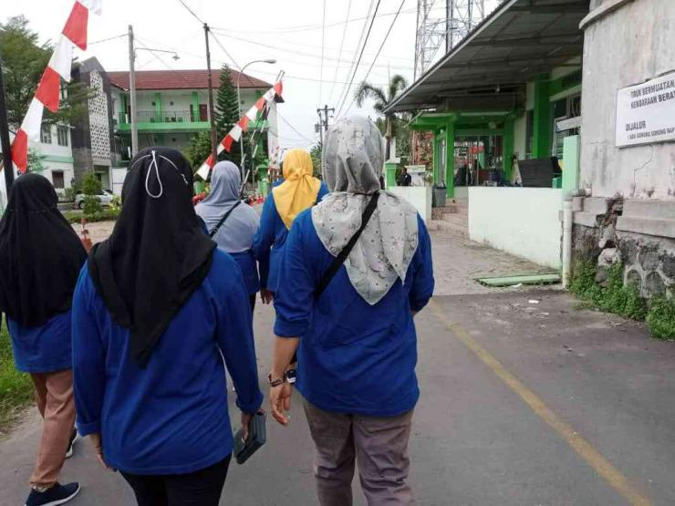
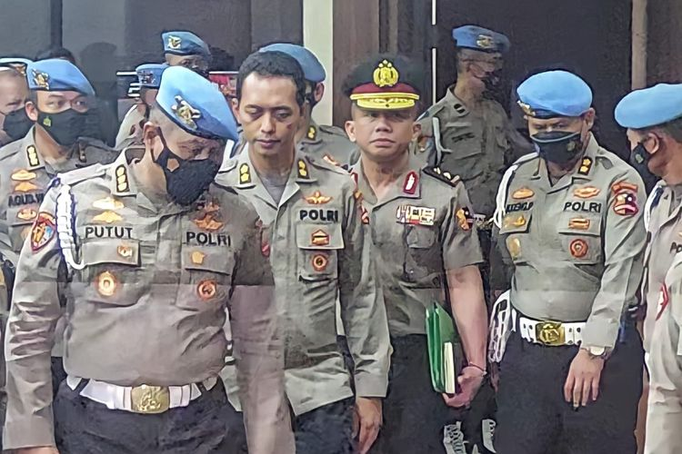
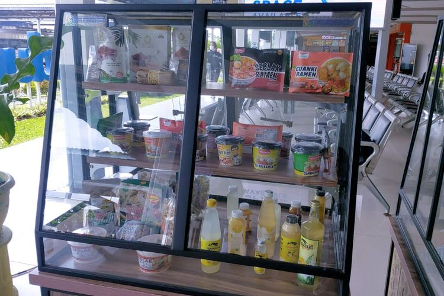

Agung Malik Al Qindy
Perumahan Tunjung Tirto Blok A-19,RT 02/RW 04,Kec. Singosari, Kab. Malang, Jawa Timur
Bondowoso, 24 Juli 2003
Memaknai Peringatan HUT RI dari Masa ke Masa

JAKARTA, KOMPAS.com -
Kemarin siang, Ahad, 21 Agustus 2022, keluarga kecil kami membersamai kakak ipar santap bersama di luar kota. Agenda tersebut sudah tercanang jauh sebelum perayaan kemerdekaan.Sepanjang perjalanan hingga kami pulang, hampir setiap daerah sedang menggelar lomba. Pula ajang karnaval memeriahkan Hari Ulang Tahun Kemerdekaan Republik Indonesia ke-77.Hal itu pula yang diselenggarakan warga rukun tetangga di tempat tinggal penulis.
Kompolnas: Anak Buah Ferdy Sambo Menangis dan Kecewa Tahu soal Rekayasa Kasus Brigadir J

JAKARTA, KOMPAS.com -
Anggota Komisi Kepolisian Nasional (Kompolnas) Yusuf Warsyim mengungkapkan, para bawahan Irjen Ferdy Sambo merasa kecewa mengetahui rekayasa kasus kematian Nofriansyah Yosua Hutabarat atau Brigadir J. Bahkan, dalam sidang Komisi Kode Etik Polri (KKEP) terhadap Sambo yang digelar Kamis (25/8/2022) hingga Jumat (26/8/2022), beberapa personel kepolisian itu menangis. "Ketika mereka (bawahan Sambo) ditanya kapan saudara merasakan bahwa apa yang dikatakan FS itu bohong, tidak sesungguhnya fakta, yang ada di situlah mereka menusuk hati sehingga tidak bisa menahan air matanya," kata Yusuf dalam siaran langsung YouTube Kompas.com, Rabu (31/8/2022).
PT KAI Sediakan Etalase dan E-Katalog untuk Bantu Pasarkan UMKM Binaan

JAKARTA, KOMPAS.com -
PT Kereta Api Indonesia (Persero) (KAI) menyediakan etalase di stasiun dan E-Katalog di kereta api untuk mempromosikan UMKM yang menjadi binaan perseroan. VP Public Relations KAI Joni Martinus mengatakan, terdapat 803 mitra binaan aktif KAI yang tersebar di seluruh daerah operasional Jawa dan Sumatera. Melalui kedua platform tersebut, calon pembeli tidak hanya dapat melakukan transaksi dalam partai besar, mereka juga bisa membeli satuan atau eceran.“Etalase di stasiun dan E-Katalog diharapkan dapat meningkatkan penjualan dan memperkenalkan produk UMKM binaan KAI kepada pasar yang lebih luas. Dengan terus pulihnya layanan angkutan penumpang KAI, maka semakin banyak masyarakat yang beraktivitas di stasiun dan mendapatkan informasi tentang produk-produk UMKM tersebut,” kata Joni dalam keterangan resmi, Kamis (1/9/2022). Pada tahap awal, terdapat etalase UMKM di Stasiun Bandung yang menampung 46 jenis produk UMKM binaan KAI. Jenis produk yang dipasarkan berbagai macam seperti makanan, pakaian, kerajinan, dan lainnya. Pada etalase tersebut, tersedia display produk yang dipasarkan disertai barcode. Calon pembeli dapat langsung melakukan scan barcode dan terhubung langsung dengan kontak mitra binaan KAI untuk melakukan transaksi pembelian. Platform lain yang KAI gunakan untuk mendorong penjualan UMKM yaitu dengan menyediakan e-katalog yang disebar di setiap kursi KA Jarak Jauh tertentu.